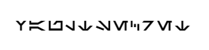

The era of Cosmic Digital Wars engulfed the galaxy, forcing spacefaring ships to battle not only physically but also in the virtual realm. Across the vastness of cyberspace, the most massive Capture The Flag (CTF) tournament in galactic history unfolded.
Aboard the starship "Cyberion," a team of hackers led by Captain Jedi Codex prepared for their final showdown. They stood before the challenge known as "Capture of the Double Star" - a legendary program protected by the most complex algorithms and an array of virtual traps.
Following Codex's command, the ship's crew got to work. The droid developer Si-PIO became the architect of the plan, programmers Leia Cipher and Han Scanner prepared viruses and attacking algorithms, while the engineer R2-Hackto tackled the physical barrier hacking issues.
As "Cyberion" penetrated the cosmic sector of the "Double Star," a real battle began. Defensive programs of virtual turrets fired code salvos, but Leia and Han effortlessly defended, creating paths for Si-PIO, who skillfully maneuvered in the network, attempting to retrieve the flag.
Team Codex adeptly hacked system after system, evading virtual guards coming at them in waves of bytes. Meanwhile, R2-Hackto successfully breached the physical shell of the "Double Star," granting access to the flag embedded in its very structure.
Finally, the moment of victory arrived as Leia and Han, with combined efforts, extracted the flag from the secured vault. It was the triumph of Cyberion in this epic digital saga.
Jedi Codex smiled, surveying his team. He knew that even in space, where technologies and code intertwined, the power of friendship and collaboration remained insurmountable. Their victory in this cosmic CTF battle was a bright spot in the universe of digital possibilities.
